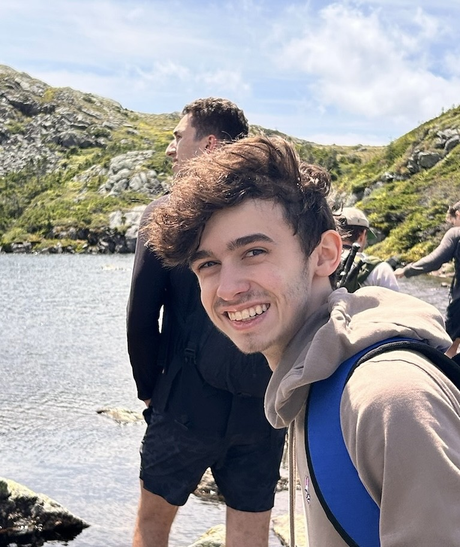

Computer Scientist | Math Enthusiast | Available for full-time roles
Hi, I’m Peter Johnstone, a Software Engineer from Hendersonville, Tennessee. I recently graduated from Stonehill College in Easton, Massachusetts with a B.S. in Computer Science with a Mathematics Minor. I have a deep passion for programming, problem-solving, and the intersection of math and technology, which drives my personal and professional pursuits.
Beyond my technical interests, I'm an avid chess player. I also love spending time outdoors—whether it’s hiking, exploring new places, or simply enjoying nature. I’m always eager to learn, solve complex problems, and collaborate on projects that push the boundaries of innovation.
Email: pjohnstone2003@gmail.com
LinkedIn: www.linkedin.com/in/peter-johnstone
Computer Scientist | Math Enthusiast | Available for full-time roles
Hi, I’m Peter Johnstone, a Software Engineer from Hendersonville, Tennessee. I recently graduated from Stonehill College in Easton, Massachusetts with a Computer Science Major and a Mathematics Minor. I have a deep passion for programming, problem-solving, and the intersection of math and technology, which drives my personal and professional pursuits.
Beyond my technical interests, I'm an avid chess player. I also love music, movies, and spending time outdoors, whether it’s hiking, exploring new places, or simply enjoying nature. I’m always eager to learn, solve complex problems, take initiative, and collaborate on projects that push the boundaries of innovation.
Tap the needle or play button for a preview of some of my favorite songs · Next cycles tracks
Resume
Contact
I’m actively looking for full-time roles in software engineering and detection engineering. Open to positions where security and software intersect.